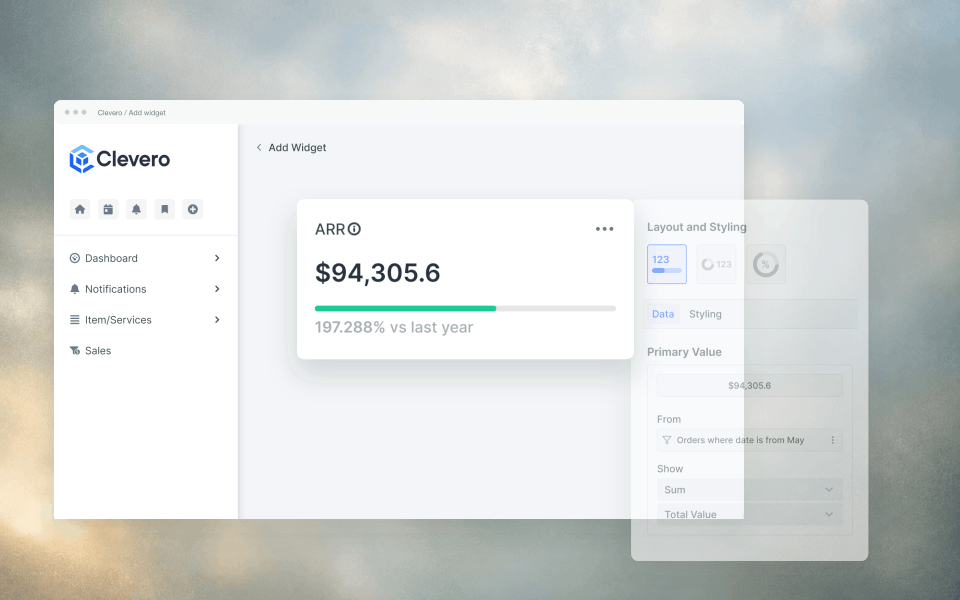
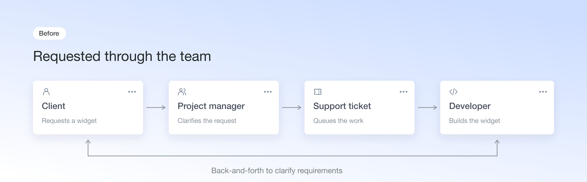
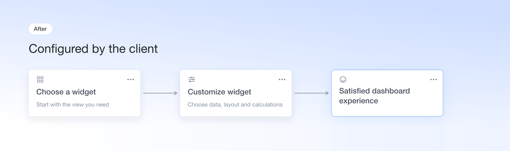
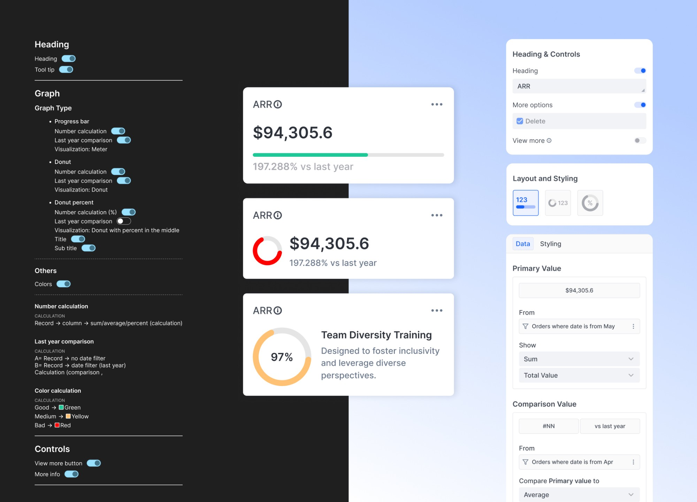
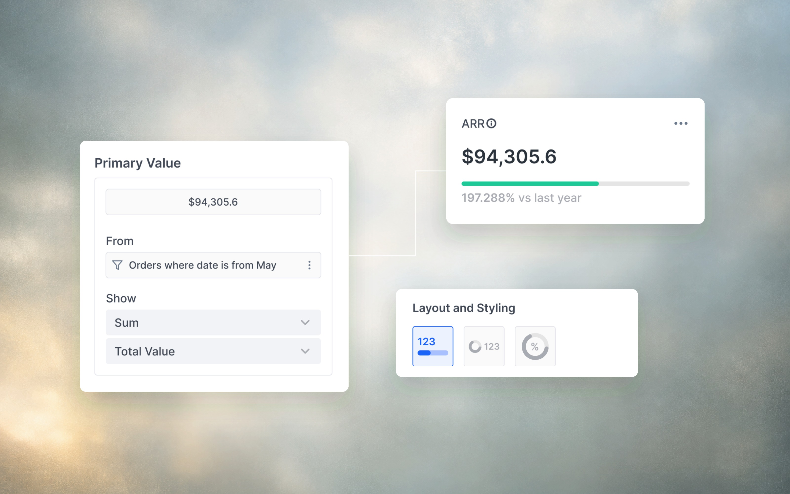
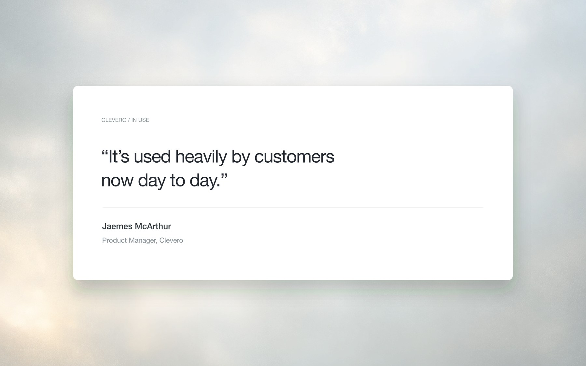
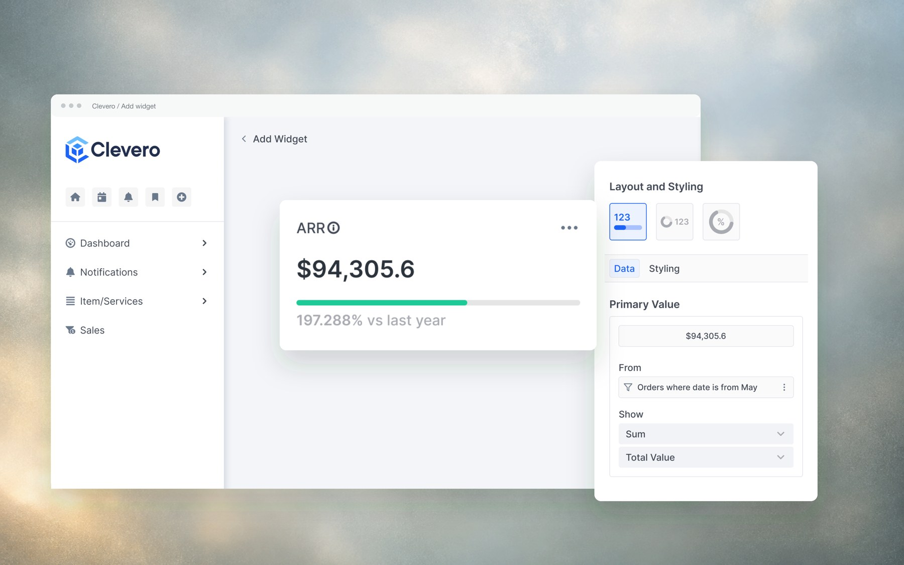

Case Study — Product Design
Widget Builder: Making Clevero dashboards configurable without code
Used heavily by customers day to day, replacing a request-a-developer workflow with self-serve configuration.

Overview
Clevero is an operations platform for service businesses managing complex client workflows. As clients’ needs became more specialized, dashboard customization increasingly depended on developer support. I designed a configurable widget system that made customization self-serve.
As the sole designer, I worked closely with the PM (who also handled customer support) and partnered with the developer through implementation.
Problem
Customization meant waiting on a developer.
Clevero brings customer management, projects, scheduling, billing, and other operational work into one platform. But adapting its dashboard involved a manual process.
Clients requested widgets through their PM, who created a support ticket for a developer. Clarifying requirements meant further back-and-forth, leaving clients waiting and adding to engineering's workload. Clients could create widgets independently, but that required code.

I focused on making widgets configurable around clients' own records. Expanding the library alone would cover more requests, but clients would still need help whenever their requirements fell outside those options.

Starting point
Starting with what clients already needed.
I worked with the PM to choose an initial set based on current and past client requests. It included charts, tables, number summaries, lists, and Kanban boards, with room to add more later.
So the harder question became:
How do we make configuration familiar across widgets with different requirements?
A table might need averages and conditional colors, while a chart needed layout choices and comparisons. Each needed appropriate controls within a structure clients could learn once and return to.
Editor
Giving each setting a clearer place.
My first draft relied heavily on toggles, with similar settings repeated across graph types. As I added options, the panel became cluttered. I was concerned that users would struggle to understand what a setting changed — or find it again later.

The early exploration repeated options across graph types. The revised editor separated layout selection from data configuration.
I reorganized the editor around headings and controls, layout choices, and data and styling settings.
The reorganized editor
Headings & controls
Layout choices
Data & styling
This gave settings a consistent place while allowing each widget to have the options it needed.
Connecting data
Connecting the view to the client's records.
Clients could define both what a widget displayed and where its data came from. In the example below, the primary value uses a sum of the Total Value field from a filtered set of order records.

The preview stayed alongside the editor, keeping the widget visible while clients worked through its settings. Shared configuration patterns supported different widget types, while their layouts and content controls accommodated specific needs.
Outcome
Clients configure their own dashboards. No dev ticket required.
Clients could configure their dashboards and create reports themselves, giving them more control over how they viewed their operational data.
The PM reported that customers were using the feature heavily day to day — putting operational tasks in front of staff and creating reports to support decisions.

The project gave clients a way to adapt their dashboards within the available configuration options, without starting a development request for each change.
